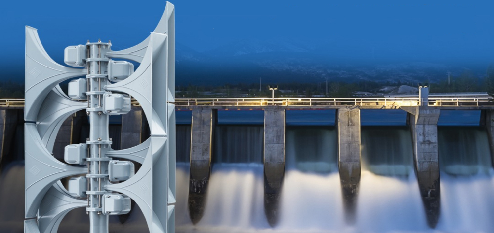
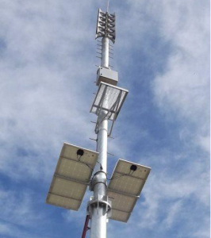

Sirens for Tailings dams, Hydroelectric Power Stations,
Chemical Industry and Ports

Reliably alerting the public to imminent threats is our primary concern. This is what
HÖRMANN Warnsysteme (Warning
systems)represents with its experience of more than 60 years of development and
production of sirens. Our products alert
people around the world who face threats from dam breaks, floods, fires, tsunamis and
toxic substances or other
disasters.
Our experts will guide you through the process of planning, installing, commissioning
and maintaining your electronic
siren system:

Detailed Sound-Planning (number & power of sirens) to guarantee alert
employees and population in the ZAS
(at 70db)
Supply and installation of digital VHF radios and antennas for remote
monitoring and activation
Determination of electrical supply (network or solar panel)
Connection for redundant electrical supply (generator) at siren pole
Supply and installation of siren poles with their respective grounding
and lightning strikes
Supply and installation of sirens; which already include the local control
panel with batteries
Interface for automated activation of sirens
Supply and installation of centralized control systems for the operating base
for up to 999 sirens across
whole Brazil